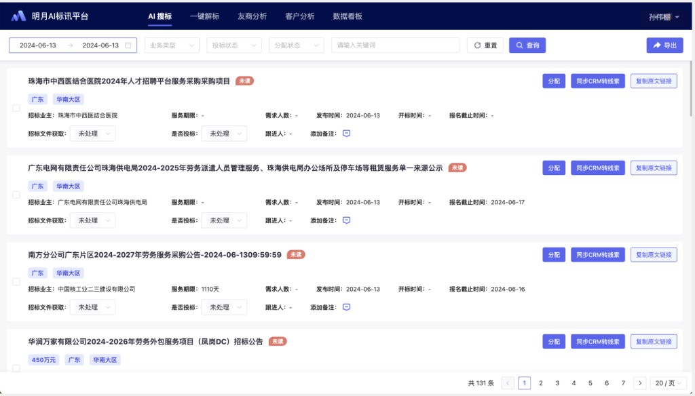
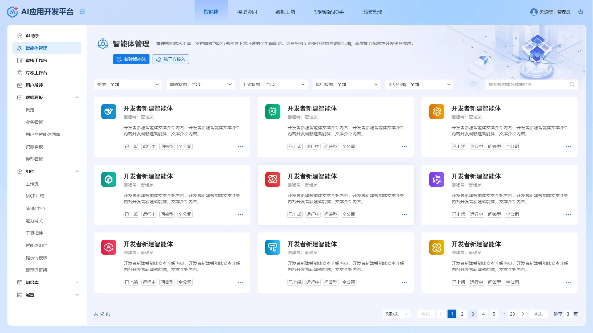
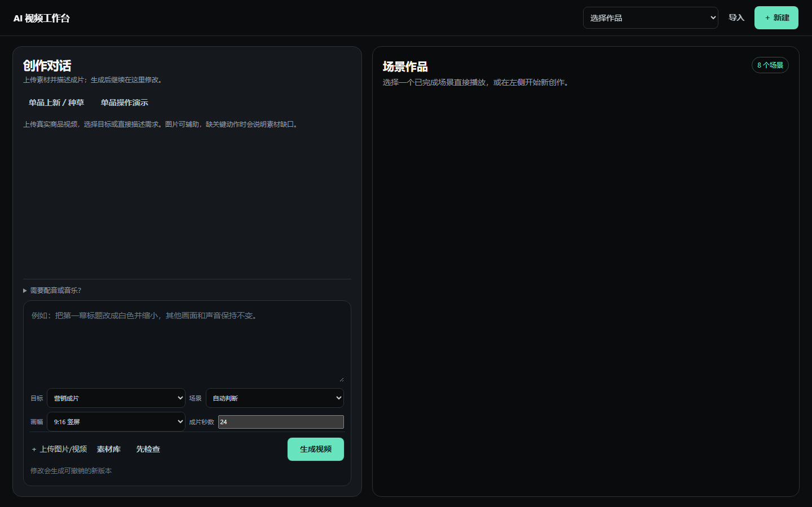
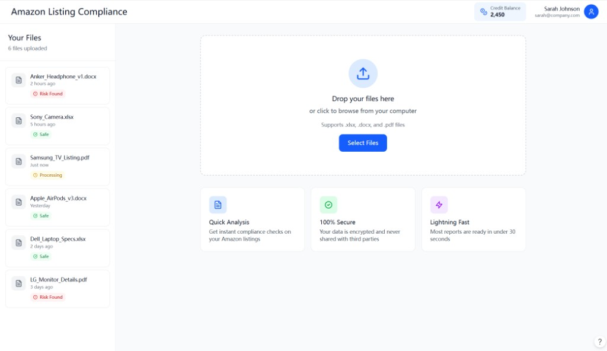
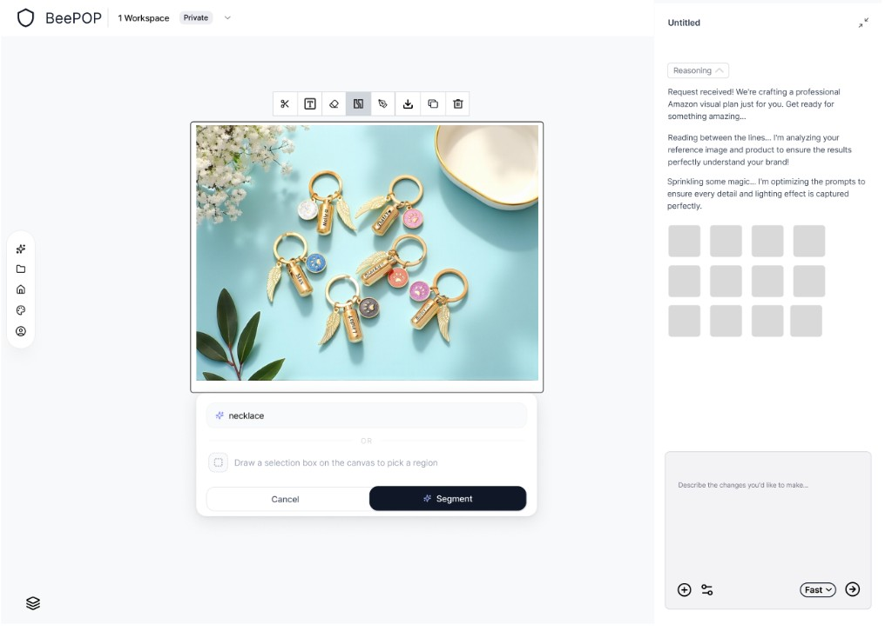

PERSONAL SITE / 2026
个人资料
孙伟棚.AI 产品经理 / AI Product Manager
负责企业大模型与智能体产品设计。
做过标讯、写作、数据分析与模型平台。
EXPERIENCE
优量科技 · 科大讯飞 · 君润数智
移动鼠标，或向下探索ART IN MOTION
PRODUCT / AGENTS / TOOLS向下探索
01 / EDUCATION
教育经历
- 2021 — 2023
中南财经政法大学
- 2017 — 2021
哈尔滨商业大学
02 / EXPERIENCE
点击展开职责工作经历
2026.05 — 2026.08深圳优量科技有限公司 AI 产品经理
负责产品架构和平台治理设计，明确能力模块、角色权限及运营协作规则。梳理客户业务流程，建立问题分派、效果验证和反馈改进机制。
2024.11 — 2026.03科大讯飞股份有限公司 产品经理
负责 B 端需求调研、产品方案、研发协同及验收交付。协同售前、算法和研发确定技术应答、交付边界、验收标准和实施节奏。
2023.07 — 2024.10广东君润数智科技有限公司 助理 AI 产品经理
负责将业务需求拆成流程、产品原型和 PRD，协同研发推进评审、排期、上线与迭代。建立问题反馈、策略调整及效果评估流程。
03 / PROJECTS
项目经历

AI 智能标讯管理系统
设计标讯采集、分派与 CRM 跟进，交付核心模块 PRD、原型与指标定义。

企业级智能体服务平台
规划企业智能体运营与开发的分工，交付方案、PRD 与约 42 页静态原型。

AI 智能写作平台
设计报告、方案和素材库，完成大纲确认、分段生成与人工审阅的工作台方案。

WorldQuant Alpha 智能研究系统
独立完成研究 MVP。一次本地运行生成 10 个候选，1 个通过校验进入待模拟队列。

电商视频创作 Agent
定义素材到可编辑视频工程的流程，跑通渲染、版本保存和对象级修改。

Listing 禁售品检测和敏感词优化
设计多 SKU 合规检测、人工复核和导出流程，完成方案与任务工作台界面。

AIGC 图片生成和编辑平台
完成商品图分割、擦除和配字的 PRD、画布原型与模型实现建议。

Agent 应用开放平台
设计 Agent 五层分工、工具接入与记忆规则，交付配置、编排界面和能力清单。

AI 量化研究与自动交易平台
梳理下单、成交与中断状态，打通 Testnet 模拟执行并完成回归验证。
AI 业务数据分析系统
设计复杂实验数据分析流程，把任务拆解、工具调用、多轮分析和结果校验接到星火工作流。
04 / TOOLKIT & CRAFT
产品 / 智能体 / 工具技术与工具
AI PRODUCT DESIGN
AI 产品与场景设计
从业务需求入手，明确产品流程、功能规则和交付标准。
- 识别业务场景中适合用 AI 解决的问题
- 设计企业 Agent、标讯、写作与数据产品的核心流程
- 用 Figma 验证关键交互与产品原型
- 从需求评审推进到上线、验收和反馈
AGENTS & WORKFLOWS
智能体与工作流
设计可复用的 Agent 能力，用测试和业务反馈迭代效果。
- 将复杂任务拆解为 Prompt、Skill 与工具调用
- 编排 Agent 与 Workflow，定义任务与异常状态
- 结合知识库、插件与角色权限设计执行流程
- 根据测试指标和用户反馈优化稳定性
TOOLS & LANGUAGES
AI 原型与工具实践
把产品想法快速做成可操作的 Demo，验证关键路径。
- 用 Claude Code、Codex 和 Cursor 搭建原型
- 使用 ComfyUI 和 Stable Diffusion 验证图像工作流
- 使用 Python、PyTorch 和 MySQL 验证技术方案
- 结合 Figma 和 Vibe Coding 验证产品交互
专业与语言资质
- NPDP 产品经理国际资格认证
- 人工智能训练师（高级）
- CET-6
- WorldQuant Brain Gold